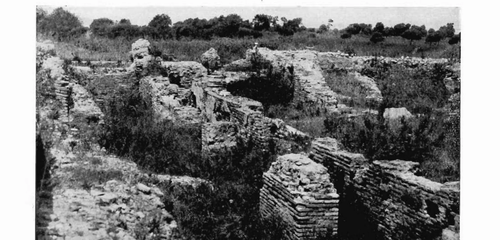
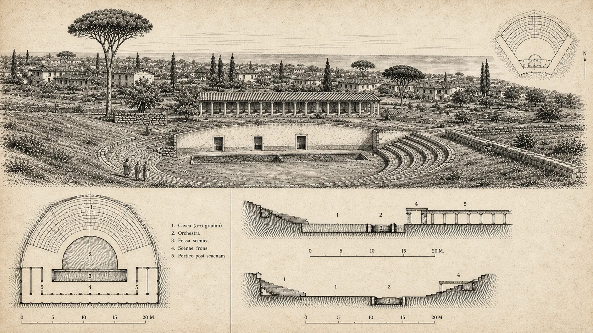
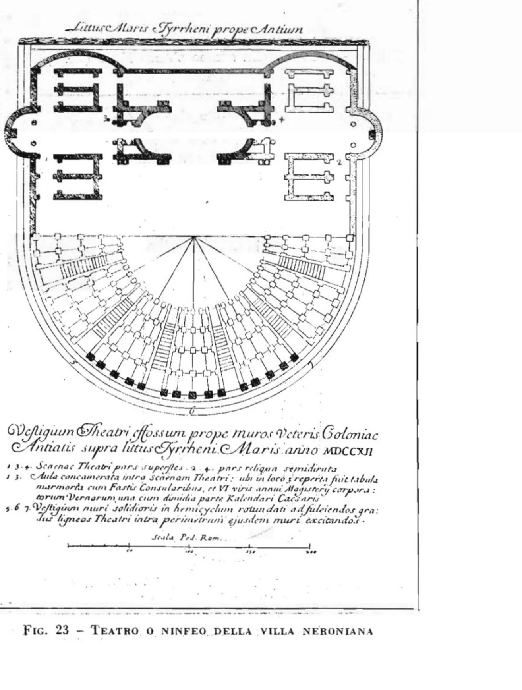

Il teatro che guarda il mare
Trenta metri di diametro, undici spicchi di gradinata, diciotto colonne dietro la scena e la cavea rivolta verso il Tirreno. Un teatro piccolo ma di gran lusso, fatto per pochi ospiti di rango e non per la gente della città.
Un teatro per pochi, con il mare alle spalle
Dove guarda la gradinata? Non la città: guarda a ovest, il mare aperto. Nel Lazio non c'è un altro teatro così. Chi sedeva in alto aveva davanti la scena e, dietro, l'orizzonte del Tirreno. Non era un teatro per la folla. Era piccolo, foderato di marmi pregiati, pensato per i nobili in villeggiatura e per gli ospiti della vicina villa imperiale.
Lo ritrovarono alla fine degli anni Venti del Novecento, in mezzo al quartiere di Santa Teresa, negli stessi anni in cui riemergevano villa Spigarelli e l'edificio semicircolare con lo xystus. Fu scavato «fuori da ogni controllo» scientifico, scrive Jaia, e in parte restaurato. La prima descrizione seria la diede Giuseppe Lugli nel 1940. È ancora quella di riferimento: una monografia moderna non è mai arrivata.


Tavola grafica con vista prospettica della cavea aperta sul mare, pianta a quota d'orchestra, due sezioni e schema dell'orientamento ovest.
- Cavea: la gradinata a semicerchio, con appena 5–6 file di sedili, divisa in 11 spicchi.
- Orchestra: il semicerchio davanti alla scena, pavimentato in opus sectile, dove sedevano senatori, magistrati e ospiti illustri, sui bisellia.
- Fossa scenica: una fossa lunga e stretta davanti al palco, per le macchine del sipario e i contrappesi.
- Scaenae frons: il fondale monumentale, a più ordini di colonne di marmo, con tre porte (la porta regia al centro e due porte per gli ospiti).
- Porticus post scaenam: il colonnato dietro la scena, con 18 colonne all'inizio, poi 14, quando agli estremi furono costruite due stanze coperte.
Quando fu costruito, e con quali marmi
Lo scheletro è in opus mixtum: mattoni alternati a un reticolato di blocchetti di tufo messi in diagonale. Quando fu costruito? Dalla tecnica dei muri, Lugli metteva l'inizio del cantiere nella seconda metà del I secolo d.C. La scheda del Museo Civico di Anzio preferisce una data più prudente, il II secolo. Le due idee possono stare insieme: lo scheletro potrebbe essere più antico, e i marmi e l'apparato della scena un rinnovo successivo. In età moderna vennero i restauri dopo i danni della Seconda guerra mondiale, e i consolidamenti degli anni Cinquanta.
Le misure sono piccole, trenta metri. La decorazione no. Le pareti erano rivestite di marmi pregiati, cipollino, giallo antico, pavonazzetto, che gli scavi hanno ritrovato. Lugli lo riassumeva così: «un particolare lusso e un uso limitato a pochi spettatori, ma di rango scelto». Un teatro da villa imperiale, più che un teatro civico.
Gli undici spicchi della gradinata
La cavea, la gradinata, è il punto in cui il teatro romano si stacca da quello greco. I Greci scavavano i gradini nel fianco di una collina. I Romani li costruivano da terra, sopra muri, volte e arcate. Tutto artificiale.
Ad Antium la gradinata è divisa in undici spicchi, separati da scalette che salgono a raggiera. In orizzontale c'erano tre fasce, bassa, media e alta, collegate da corridoi e parapetti. Gli scavi hanno trovato anche un corridoio a semicerchio, coperto a volta, che passava sotto gli spicchi e smistava il pubblico.
Quella divisione non era solo ingegneria. Era controllo sociale. Con la Lex Iulia Theatralis Augusto stabilì chi sedeva dove, secondo il censo, il grado militare, lo stato civile e il sesso. In basso cavalieri e magistrati, in mezzo i cittadini liberi, in alto donne, schiavi e liberti. Il teatro era la gerarchia di Roma, scolpita nella pietra.
Come si riempiva e si svuotava in pochi minuti
A muovere la folla pensavano i vomitoria: corridoi coperti che bucavano la gradinata e sbucavano in mezzo ai sedili. Da lì l'edificio «vomitava» gli spettatori nel loro settore, e da qui viene il nome.
Il teatro di Anzio conserva le tracce di tre ingressi a volta, uno grande al centro e due laterali curvi. Percorsi separati per ranghi diversi: nobili e popolani entravano e uscivano alla stessa ora senza mai incrociarsi. E il teatro si riempiva, o si svuotava, in pochi minuti.
Dove sedevano le autorità
Nel teatro greco lo spazio tra gradinata e scena restava aperto, e lasciava entrare il paesaggio. I Romani lo chiusero. Al posto di quei passaggi costruirono due gallerie coperte, gli aditus maximi, e sopra ricavarono due terrazze sull'orchestra, i tribunalia. Lì sedevano le autorità più alte: vedevano lo spettacolo, e soprattutto si facevano vedere.
Le due ali ai lati della scena, le versurae, facevano tre lavori insieme. Tenevano dentro il suono, puntavano lo sguardo sul palco e davano un senso alle entrate. Nelle commedie di Plauto e di Terenzio, chi entrava da sinistra arrivava dal foro o dal centro; chi entrava da destra tornava da un viaggio, o dal porto.
L'orchestra di marmo e il muro della scena
Scendendo si arriva all'orchestra. In Grecia era un cerchio per il coro. A Roma il coro contava meno, e contavano di più il mimo e la pantomima: l'orchestra si ridusse a semicerchio, fu pavimentata a disegni di marmi colorati, l'opus sectile, e riempita di bisellia, sedili doppi per senatori, patroni della città e ospiti d'onore.
Davanti c'era il palco, il pulpitum. Le autorità sedevano in basso, nell'orchestra, e così il palco non poteva superare il metro e mezzo, per non coprire loro la vista. Sotto, ad Antium, gli scavi hanno trovato stanze sotterranee: i magazzini per maschere e attrezzi, e i camerini degli attori.
Il vero spettacolo dell'architettura, però, stava alle spalle degli attori. La scaenae frons, il fondale di colonne e marmi, chiudeva il teatro come una cassa armonica: alta quanto la gradinata, con due o tre ordini di colonne, nicchie, statue. Quella di Antium aveva, come voleva Vitruvio, tre porte, e Lugli ne ritrovò soglie e cardini:
| Porta | Posizione | Funzione scenica convenzionale |
|---|---|---|
| Valva regia | Centrale, la più grande | Ingresso del protagonista, del sovrano o del personaggio principale |
| Porta hospitalis sinistra | Laterale sinistra | Personaggi comprimari, ospiti, provenienza dal foro o dalla città |
| Porta hospitalis destra | Laterale destra | Rientro da un viaggio, dal porto, dalla campagna |
Il sipario che scendeva invece di salire
Davanti al palco, ad Antium, c'è una fossa lunga e stretta. Serviva alle macchine del teatro e al meccanismo del sipario.
Perché il sipario romano non scendeva dall'alto: faceva il contrario. All'inizio dello spettacolo l'auleum veniva abbassato, spariva dentro la fossa e scopriva la scena di colpo. Alla fine lo tiravano su con argani, contrappesi e carrucole di bronzo. Ce n'era anche un secondo, più leggero, il siparium, che mimi e commedianti usavano per nascondere pezzi di palco durante i cambi. Due sipari, due tecniche, per decidere che cosa doveva guardare il pubblico.
Il «foyer» antico dietro la scena
Vitruvio voleva che dietro la scena ci fosse sempre una grande piazza a colonne, la porticus post scaenam. Ad Antium se ne vedono ancora le basi delle colonne: diciotto all'inizio, poi quattordici, quando agli estremi del colonnato furono costruite due stanze coperte.
A che serviva? A riparare il pubblico quando arrivava un acquazzone. A fare da sala d'attesa e da passeggio, il foyer del mondo antico, dove i notabili trattavano affari tra giardini e fontane. E a tenere al sicuro le macchine di scena. Le due stanze laterali erano probabilmente i ripostigli dei meccanismi e dei paranchi del sipario.
Perché la cavea guarda a ovest
La cosa più strana resta l'orientamento. L'asse del teatro punta a ovest, verso il mare, e non per colpa del terreno: è una scelta. Vitruvio raccomandava di studiare bene posto e venti, per la salute del pubblico, e di evitare quelli caldi e umidi. Qui però c'è di più. Girando la gradinata verso il mare, il teatro regalava a chi sedeva in alto un panorama sterminato, come fondale naturale della scena. Un'idea che lo avvicina alle terrazze delle ville al mare dei patrizi, e che tra i teatri del Lazio non ha confronti.
Tutto nasceva da una geometria precisa. Vitruvio insegnava a progettare un teatro partendo dal cerchio dell'orchestra e disegnandoci dentro quattro triangoli equilateri: le loro punte fissavano la linea della scena, le scale, il bordo del palco. Perché tanta cura? Per l'acustica. Vitruvio paragonava la voce ai cerchi che si allargano sull'acqua, e calcolava la pendenza della gradinata perché il suono arrivasse a ogni sedile.
Piccolo, ma di un'altra categoria
Con i suoi trenta metri di diametro, il teatro di Antium è piccolo accanto ai grandi della regione: Ostia ne misura sessantatré, Terracina una quarantina. Eppure gioca in un'altra categoria. Lo dicono il marmo ovunque, il colonnato monumentale, la posizione sul promontorio. Più che un teatro civico, un teatro da villa imperiale, come quelli privati dei palazzi di Tiberio e Nerone.
L'acqua del teatro
Un teatro non vive senz'acqua: serve per pulire, per le fontane, perfino per profumare l'aria sopra il pubblico. Lugli ne documentò l'impianto. Dalla cavea parte un canale di scolo coperto «a cappuccina», con due tegole appoggiate a capanna, che scaricava verso il mare. Poco più a sud c'è una grande cisterna a cunicoli, servita da pozzi rotondi con le pedarole, gli incavi per mani e piedi che servivano a calarsi giù. Uno di quei pozzi lo scavarono fino all'acqua: 32 metri di profondità. Sotto il teatro che guardava il mare c'era un'opera di ingegneria che nessuno spettatore vedeva.
Prima del teatro, il «teatro» sbagliato: Albani, Bianchini e i Fasti
Nel 1711 il cardinale Alessandro Albani fece scavare in grande nell'area della villa imperiale. Portò via sculture, iscrizioni, marmi. Busti di Adriano, di Settimio Severo e di Faustina, una Cibele su un leone, satiri, atleti, un tripode, un grande vaso di bronzo: è l'elenco che ci ha lasciato Lombardi. Tutto finì a Roma. Nel 1733 la raccolta fu venduta a papa Clemente XII per 66.000 scudi (63.000, secondo Lombardi), e diventò uno dei primi nuclei del Museo Capitolino.
Tra quegli scavi venne fuori un edificio che monsignor Francesco Bianchini chiamò teatro, e lì dentro una lapide del calendario giuliano: mezzo calendario ufficiale romano, con i consoli del I secolo, le feste della città e l'elenco dei servi e dei liberti del palazzo imperiale. Bianchini la pubblicò nel 1723, e di nuovo, spiegata per intero, nel 1727.
Ma quel «teatro» stava da un'altra parte. Il teatro di Santa Teresa, nel 1711, era ancora sotto terra. Quello di Bianchini stava vicino alla costa, ed era con ogni probabilità un settore delle terme della villa imperiale (lo racconta il riquadro «Quale teatro descrisse Bianchini?»). E la data 1712 incisa sulla sua tavola ha generato un altro piccolo equivoco: gli scavi erano del 1711, come aveva già notato Lombardi e come conferma Jaia.

Declino, rifunzionalizzazione tardo-antica e abbandono
Alla fine del IV secolo il cristianesimo diventò religione di Stato, e per i teatri fu la fine. I vescovi li combattevano. Troppi legami con i riti pagani, troppa volgarità in mimi e pantomime. Eppure, nel 381-382 d.C., le terme pubbliche lì vicino venivano ancora restaurate, per volere del proconsole Anicio Auchenio Basso. La città era viva. Il teatro no.
Poi l'edificio cambiò mestiere. I corridoi dei vomitoria, con i muri spessi di calcestruzzo, l'opus caementicium, e le volte a botte che tenevano il calore, diventarono fornaci per cuocere mattoni. Lo raccontano ancora gli strati pieni di carbone e di cocci trovati sul pianoro di Santa Teresa. I marmi sparirono un pezzo alla volta, la terra coprì il resto. E il teatro dormì sepolto fino agli anni Venti del Novecento.
Oggi ne restano poche strutture, strette tra le case del quartiere. Ma fermati sul pianoro di Santa Teresa e immagina la cavea piena, gli attori in scena e il Tirreno che luccica alle loro spalle. Gli anziati quel punto non l'avevano scelto per caso. Volevano che lo spettacolo finisse dove comincia il mare.
Dove
Piazzale del Teatro Romano, quartiere Santa Teresa, Anzio. I resti sono inglobati tra le case e al momento si vedono solo da fuori, oltre la recinzione: l'area non è aperta alle visite. I materiali dell'edificio sono esposti al Museo Civico Archeologico di Anzio (Villa Adele).
| Caratteristica | Dato |
|---|---|
| Diametro cavea | circa 30 m |
| Tipologia | Teatro romano (non odeon) |
| Cunei | 11, separati da rampe radiali |
| Ordini di sedili | 5–6 (cavea bassa) |
| Accessi radiali | 3 fornici voltati (1 centrale, 2 laterali) |
| Porte della scaenae frons | 3 (valva regia + 2 portae hospitales) |
| Colonne porticus post scaenam | 18 originarie, ridotte a 14 |
| Tecnica costruttiva | Opus mixtum (reticolato + laterizio) |
| Marmi documentati | Cipollino, giallo antico, pavonazzetto |
| Datazione (Lugli 1940) | Seconda metà I sec. d.C. |
| Datazione (Museo Civico) | II sec. d.C. |
| Orientamento cavea | Verso ovest (mare aperto) |
| Visitabile | No: resti visibili solo dall'esterno; materiali al Museo Civico |